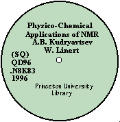
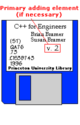

|
Accompanying material
General
policy
CD-ROMs,
sound discs, computer disks
Audio & video cassettes
Microfiche
Maps
Serials with accomp. materials
Catalog
record
Item record
|
CD-ROMs (Computer Optical Discs) and Sound Discs:
- Mark
call number and Princeton University Library or P.U.L. on disc
(text side) with special pen (Sharpie brand permanent marker)
- For
both hardbound and softbound items have a pocket made in the back
of the book, if needed.
- See
also: Physical Treatment of Non-Print
Materials
|
 |
Computer disks (3 1/2 and 5 1/4 in.):
- Mark
the call number and primary adding element in pencil on disk label.
- For
both hardbound and softbound items have a pocket made in the back
of the book, if needed.
- For
Property Marking:
On a Binding and Preservation Services Advice Slip, write:
"Please property stamp computer disk".
|
 |
|